용접기사 (2014-03-02 기출문제)
1과목: 기계제작법
1. 다이 내에 테이퍼 구멍으로 소재를 잡아 당겨서 테이퍼 구멍과 동일한 단면의 봉재, 관재, 선재를 제작하는 가공 방법은?
- 압출
- 전조
- 압연
- 인발
(정답률: 87%)

2. 용접봉 표시기준 “E 4313"에서 그 의미가 맞는 것은?
- E : 전기용접봉
- 43 : 탄소함유량
- 1 : 피복제
- 3 : 심선 지름
(정답률: 88%)
3. 치공구를 사용하는 주된 이점이 아닌 것은?
- 제품의 정밀도가 향상된다.
- 작업공정을 단축시킨다.
- 미숙련자도 정밀작업이 가능하다.
- 불량품 및 호환성이 감소한다.
(정답률: 71%)
4. 다음 중 자유단조에 속하지 않는 것은?
- 업셋팅(up-setting)
- 늘리기(drawing)
- 블랭킹(blanking)
- 구부리기(bending)
(정답률: 77%)
5. 연삭기 중에서 주로 마그네틱 척(magnetic chuchk)을 사용하는 연삭기는?
- 내면 연삭기(internal grinder)
- 만능 연삭기(universal grinder)
- 평면 연삭기(sur face grinder)
- 공구 연삭기(tool grinder)
(정답률: 59%)
6. 삼침법에서 미터나사의 유효지름(De)을 구하는 공식은? (단, N은 삼칩을 나사 홈에 접촉 후 측정한 외측거리, W는 삼침의 지름, P는 미터나사의 피치이다.)
- De = M + 3W - 0.866025P
- De = M - 3W - 0.866025P
- De = M - 5W + 0.966025P
- De = M + 5W - 0.966025P
(정답률: 55%)
7. 금속재료의 기계적 성질 중 소성가공에 이용되는 성질이 아닌 것은?
- 연성(ductility)
- 취성(brittleness)
- 가소성(plastictity)
- 가단성(malleability)
(정답률: 77%)
8. 산소-아세틸렌 가스용접에서 전진법과 후진법을 비교 설명한 것 중 틀린 것은?
- 전진법은 열 이용률이 좋고 후진법은 나쁘다.
- 전진법은 용접 속도가 느리고 후진법은 빠르다.
- 전진법은 산화의 정도가 심하고 후진법은 약하다.
- 전진법은 얇은 판에 좋고 후진법은 두꺼운 판에 적합하다.
(정답률: 57%)
9. 연산력이 200N이고, 연삭속도가 1500m/min 일 때, 연산동력(PS)은 약 얼마인가? (연삭 효율은 100%로 한다.)
- 4.5PS
- 6.8PS
- 10.1PS
- 15.3PS
(정답률: 50%)
10. 가스침탄법에서 저탄소강에 침탄층의 깊이를 증가시키기 위해 사용하는 첨가 원소는?
- Cr
- N
- W
- Si
(정답률: 46%)
11. 각도 측정 게이지가 아닌 것은?
- 하이트 게이지(heigt gauge)
- 오토 콜리메이터(auto colimator)
- 수준기(precision level)
- 사인바(sine bar)
(정답률: 66%)
12. 입도가 작고 연한 숫돌을 적은 압력으로 공작물 표면에 가입하면서 공작물에 이송을 주고 숫돌을 좌우로 진동시키면서 가공하는 것은?
- 샌드 블라스팅
- 슈퍼피니싱
- 배럴가공
- 버니싱
(정답률: 67%)
13. 지그(jig)작업 시 공작물의 위치결정 방법 중 한 공작물이 일직선상에서 적어도 2개의 반대방향 운동을 억제하는 경우 둘 또는 그 이상의 표면 사이에서 억제되며, 위치 결정하는 방법은?
- 풀 프로핑
- 네스팅
- 이젝팅
- 센터링
(정답률: 66%)
14. 선박 작업 시 절삭속도가 60m/min 이고, 주분력이 250N일 때 절삭동력은?
- 2.5kW
- 3.4kW
- 4.4kW
- 5.4kW
(정답률: 29%)
15. 소성가공에 속하지 않는 것은?
- 코킹(caulking)
- 스웨이징(swaging)
- 호닝(honing)
- 딤 드로잉(deep drawing)
(정답률: 75%)
16. 압연된 강편의 종류 중 4각형 단면치수가 40×40mm 부터 120×120mm 정도인 단면적을 갖는 중간재는?
- 빌렛(billet)
- 슬래브(slab)
- 볼룸(bloom)
- 로드(rod)
(정답률: 76%)
17. NC프로그램 작성 시 사용하는 기능에 대한 구분으로 틀린 것은?
- 이송가능 : S기능
- 공구기능 : T기능
- 보조기능 : M기능
- 준비기능 : G기능
(정답률: 63%)
18. 주물의 표면을 백선 주철화하여 표면경도를 높이고 내마멸성이 우수한 주조방법은?
- 셀 올드 주조
- 탄산가스 주조
- 칠드 주조
- 다이캐스팅
(정답률: 57%)
19. 고체침탄법의 특징으로 틀린 것은?
- 탄소의 농도 조절이 가능하다.
- 큰 부품의 처리가 가능하다.
- 소량생산에 적합하다.
- 설비비가 싸다.
(정답률: 48%)
20. 액체 호닝의 설명으로 옳은 것은?
- 랩과 일감 사이에 렙제를 넣어 서로 누르고 비비면서 다듬는 방법
- 물(가공액)과 혼합된 연삭입자를 압축공기로 고속 분사 시켜 매끈하게 다듬질하는 방법
- 혼(hene)에 회전 및 직선왕복 운동을 주어 가공하는 방법
- 숫돌을 진동시키면서 가공물을 완성 가공하는 방법
(정답률: 74%)
2과목: 재료역학
21. 지름이 7mm, 길이 250mm인 연강 시험편으로 비틀림 시험을 하여 얻은 결과 토크 4.08Nㆍm에서 비틀림 각이 8°로 기록되었다. 이 재료의 전단탄성계수는 약 몇 GPa인가?
- 64
- 53
- 41
- 31
(정답률: 40%)
22. 그림과 같은 외팔보에서 집중하중 P = 50kN이 작용할 때 자유단의 처짐은 약 몇 cm인가? (단, 탄성계수 E = 200GPa, 단면2차모멘트 1=105cm4이다.)
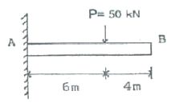
- 2.4
- 3.6
- 4.8
- 6.4
(정답률: 61%)
23. 무기가 100N의 강철 구가 그림과 같이 매끄러운 경사면과 유연한 케이블에 의해 매달려 있다. 케이블에 작용하는 응력은 몇 MPa인가?
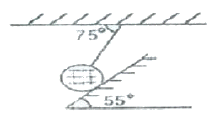
- 0.436
- 4.36
- 5.12
- 51.2
(정답률: 52%)
24. 폭 b=3cm, 높이 h=4cm의 직사각형 단면을 갖는 외팔보가 자유단에 그림에서와 같이 집중하중을 받을 때 보 속에 발생하는 최대전단응력은 몇 N/cm2인가? (문제 오류로 실제 시험에서는 모두 정답처리 되었습니다. 여기서는 1번을 누르면 정답 처리 됩니다.)
- 복원중
- 복원중
- 복원중
- 복원중
(정답률: 53%)
25. 지름 d인 강봉의 지름을 2배로 했을 때 비틀림 강도는 몇 배가 되는가?
- 2배
- 4배
- 8배
- 16배
(정답률: 54%)
26. 강재 중공축이 25kNㆍm의 토크를 전달한다. 중공축의 길이가 3m이고, 허용전단응력이 90MPa이며, 축의 비틀림각이 2.5°를 넘지 않아야 할 때, 축의 최소 외경과 내경을 구하면 각각 약 몇 mm인가? 9단, 전단탄성계수는 85GPa이다.)
- 146, 124
- 136, 114
- 140, 132
- 133, 112
(정답률: 35%)
27. 축방향 단면적 A인 임의의 재료를 인장하여 균일한 인장 응력이 작용하고 있다. 인장방향 변형률이 e, 포아송의 비를 v라 하면 단면적의 변화량은 약 얼마인가?
- veA
- 2veA
- 3veA
- 4veA
(정답률: 57%)
28. 선형 탄성 재질의 정사각형 단면봉에 500kN의 압축력이 작용할 때 80MPa의 압축응력이 생기도록 하려면 한변의 길이를 몇 cm로 해야 하는가?
- 3.9
- 5.9
- 7.9
- 9.9
(정답률: 38%)
29. 단면적이 4cm2인 강봉에 그림과 같이 하중이 작용할 때 이 봉은 약 몇 cm 늘어나는가? (단, 탄성계수 E=219GPa이다.)
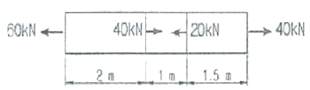
- 0.24
- 0.0028
- 0.80
- 0.015
(정답률: 23%)
30. 그림과 같은 부정정보의 전 길이에 균일 분포하중이 작용할 때 전단력이 0이 되고 최대 굽힘모멘트가 작용하는 단면은 B단에서 얼마나 떨어져 있는가?
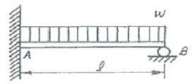
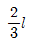
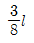
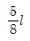
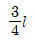
(정답률: 52%)
31. 그림과 같은 단면을 가진 A, B, C의 보가 있다. 이 보들이 동일한 굽힘모멘트를 받을 때 최대 굽힘응력의 비로 옳은 것은?
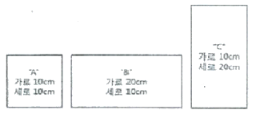
- A:B:C = 3:2:1
- A:B:C = 4:2:1
- A:B:C = 16:4:1
- A:B:C = 9:3:1
(정답률: 61%)
32. 보의 임의의 점에서 처짐을 평가할 수 있는 방법이 아닌 것은?
- 변형에너지법(Strain energy method) 사용
- 불연속 함수(Discontinuity) 사용
- 중첩법(Mithod of superposition) 사용
- 시컨트 공식(Secant fomula) 사용
(정답률: 54%)
33. 그림과 같은 보가 분포하중과 집중하중을 받고 있다. 지점 B에서의 반력의 크기를 구하면 몇 kN인가?
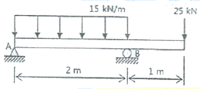
- 28.5
- 40.0
- 52.5
- 55.0
(정답률: 42%)
34. 강재 나사봉을 기온이 27℃일 때에 24MPa의 인장 응력을 발생시켜 놓고 양단을 고정하였다. 기온이 7℃로 되었을 때의 응력은 약 몇 MPa인가?
- 47.46
- 23.46
- 71.46
- 65.46
(정답률: 37%)
35. 그림과 같은 단면의 x - x축에 대한 단면 2차 모멘트는?
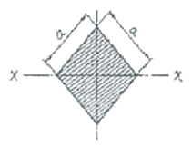
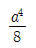
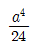
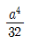
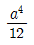
(정답률: 55%)
36. 그림과 같은 삼각형 단면을 갖는 단주에서 선 A-A를 따라 수직 압축 하중이 작용 할 때, 단면에 인장 응력이 발생하지 않도록 하는 하중 작용점의 범위(d)를 구하면? (단, 그림에서 같이 단위는 mm이다.)
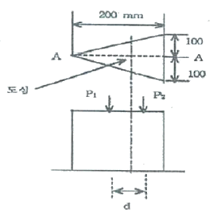
- 25mm
- 50mm
- 75mm
- 100mm
(정답률: 50%)
37. 평면응력 상태에서 σx=300MPa, σy=-900MPa, τxy=450MPa 일 때, 최대 주응력 σ1은 몇 MPa인가?
- 1150
- 600
- 450
- 750
(정답률: 40%)
38. 그림과 같은 외팔보에서 고정부에서의 굽힘모멘트를 구하면 약 몇 kNㆍm인가?
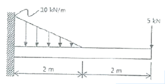
- 26.7(반시계방향)
- 26.7(시계방향)
- 46.7(반시계방향)
- 46.7(시계방향)
(정답률: 41%)
39. 아래와 같은 보에서 C점(A에서 4m떨어진 점) 에서의 굽힘모멘트 값은?
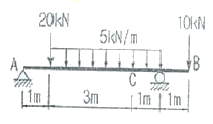
- 5.5kNㆍm
- 11kNㆍm
- 13kNㆍm
- 22kNㆍm
(정답률: 44%)
40. 그림과 같이 지름 50mm의 연강봉의 일단을 벽에 고정하고, 자유단에는 50cm 길이의 레버 끝에 600N의 하중을 작용시킬 때 연강봉에 발생하는 최대주응력과 최대전단응력은 몇 MPa인가?
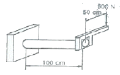
- 최대주응력 : 51.8 최대전단응력 : 27.3
- 최대주응력 : 27.3 최대전단응력 : 51.8
- 최대주응력 : 41.8 최대전단응력 : 27.3
- 최대주응력 : 27.3 최대전단응력 : 41.8
(정답률: 36%)
3과목: 용접야금
41. 강의 냉각 중 Fe-C 평행상태도에서 공석점의 조직변화 내용으로 옳은 것은?
- Pearlite → Ferrite
- Austenite → Martensite
- Austenite → Peartite
- Ferrite → Troostite
(정답률: 57%)
42. 강괴의 응고에 관한 설명으로 틀린 것은?
- 용강 중의 불순물은 인, 황, 황하철 등이다.
- 주상정이 발달하여 조대한 입상정을 형성한다.
- 주형 벽면에서 중앙부를 향한 주상정이 생긴다.
- 불순물은 용점이 높아 강괴의 가장자리부에 모이기 쉽다.
(정답률: 53%)
43. 오스테나이트계 스테인리스강의 용접에 대한 설명으로 틀린 것은?
- 짧은 아크길이를 유지한다.
- 예열을 충분히 해주어야 한다.
- 아크를 중단하기 전에 크레이터처리를 한다.
- 낮은 전류값으로 용접하여 용접 입열을 억제한다.
(정답률: 57%)
44. 방식법 중 부식을 방지하려는 금속을 외부전원에 연결하여 부식 전류와 반대방향의 전류를 흘려 부식을 방지하는 것은?
- 금속 용사법
- 산화철 피복법
- 유전양극 방식법
- 부식억제제 첨가법
(정답률: 87%)
45. 금속결정구조가 면심입방격자(FCC)로만 되어 있는 것은?
- Ag, Al, Cu, Ni
- Mo, NB, Cu, Be
- Nb, Co, Al, Mg
- Mg, Ag, Be, Ti
(정답률: 75%)
46. 피복아크 용접봉의 심선재료로 저탄소 림드강이 사용되는 가장 큰 이유는?
- 기공방지
- 피트방지
- 용락방지
- 균열방지
(정답률: 63%)
47. 탄소강 중에서 인(P)이 미치는 영향으로 틀린 것은?
- 연신율을 감소시킨다.
- 상온취성의 원인이 된다.
- 결정립을 미세화시킨다.
- Fe3P로 고스트라인을 형성시켜 파괴의 원인이 된다.
(정답률: 64%)
48. 금속의 강화기구 중 결정립의 크기와 강도와의 관계에 대한 설명으로 틀린 것은?
- 결정립의 크기가 작을수록 강도는 증가한다.
- 결정립계의 면적이 클수록 강도는 저하한다.
- 재료의 항복강도와 결정립의 크기 관계를 Hall-Petch 식이라 한다.
- 결정립이 미세할수록 항복강도 뿐만 아니라 피로강도 및 인성이 증가된다.
(정답률: 31%)
49. 일반적으로 저수소계 용접봉에서 탈산제로 사용되며, 용접 중 용융슬래그 내 FeO에 의하여 산화반응이 일어나는 원소는?
- Si
- Co
- S
- P
(정답률: 57%)
50. 소재에 인성을 부여하기 위한 열처리는?
- 뜨임(tempering)
- 불림(normalizing)
- 담금질(quenching)
- 풀림(annealing)
(정답률: 72%)
51. 아크용접에서 기공발생에 가장 큰 원인이 되는 것은?
- Fe
- Co
- N2
- CO2
(정답률: 49%)
52. 18Cr-8Ni 스테인리스강의 조직으로 맞는 것은?
- Ferrite
- Pearlite
- Cementite
- Austenite
(정답률: 68%)
53. 구리의 일반적인 성질에 대한 설명 중 틀린 것은?
- 전기 및 열전도도가 높다.
- 전연성이 좋다. 가공이 용이하다.
- 화학적 저항력이 작아 부식이 잘된다.
- 용융점 이외에는 변태점이 없다.
(정답률: 83%)
54. 황(S)의 영향으로 인하여 균열을 일으켜 가공을 곤란하게 하는 성질은?
- 쌍정
- 재결정
- 청열취성
- 적열취성
(정답률: 80%)
55. 특수강의 원소 중 고온에서의 크리이프 강도, 내식성을 크게하며 열처리 효과를 크게 하고 뜨임 취성을 방지하는 원소는?
- Mn
- Cr
- Mo
- Sn
(정답률: 35%)
56. 용접 후 풀림 효과와 가장 거리가 먼 것은?
- 잔류응력 제거
- 경도의 증가
- 절삭성의 향상
- 냉간가공성의 개선
(정답률: 57%)
57. 전위가 인접한 슬림(Slip)면상에 이동하면서 생기는 계단상의 부분은?
- 조그(jog)
- 코트렐 효과(cotrell effect)
- 프랭크-리드원(Frank Read 원)
- 전위선(dislocation line)
(정답률: 43%)
58. 금속침투법에서 강재를 가열하여 그 표면에 Al을 확산 침투시키는 방법은?
- 크로마이징
- 실리콘나이징
- 세라다이징
- 칼로라이징
(정답률: 84%)
59. 다음 중 압력 배관용 탄소 강판 재료를 나타내는 기호로 옳은 것은?
- SPPS
- STPG
- SPLT
- STK
(정답률: 67%)
60. 주석청동 중에 납을 3.0 ~ 26% 첨가한 것으로 조직 중에 납이 거의 고용되지 않고, 입간에 점재하여 윤활성이 좋아 베어링, 부싱, 패킹 등에 사용되는 것은?
- 인청동
- 연청동
- 알루미늄
- 니켈 청동
(정답률: 64%)
4과목: 용접구조설계
61. 홈 용접에 대한 설명 중 틀린 것은?
- 홈의 단면적은 가능한 작게 한다.
- 모재가 두꺼운 경우에는 대개 양면 홈을 이용한다.
- 피복아크용접시 루트 간격의 최대치는 보통 사용 용접봉 심선의 지름으로 한다.
- 피복아크용접시 I형 홈 용접을 할 경우 보통 판 두께 9mm가 매우 적합하다.
(정답률: 80%)
62. KS B 080에 금속재료 인장 시험편의 종류 중 4호 시험편의 표점거리는 몇 mm인가?
- 60mm
- 50mm
- 24mm
- 12mm
(정답률: 29%)
63. 이음개소가 1개소인 필릿 이음의 강도계산 공식으로 옳은 것은?
- 허용응력/목단면적
- 목단면적/허용응력
- 파괴하중/목걸이×용접길이
- 파괴하중/목두께×용접길이
(정답률: 72%)
64. 필릿 용접부의 균열 방지대책이 아닌 것은?
- 용접 입열량을 제어한다.
- 유황(S)성분이 적은 모재를 사용한다.
- 인(P)성분이 적은 모재를 사용한다.
- 탄소당량이 높은 모재를 사용한다.
(정답률: 90%)
65. 로크웰 경도에서 시험하중이 150kgf이며, 단단한 재료의 경도 측정에 사용되는 스케일(scale)로 적합한 것은?
- A스케일
- B스케일
- C스케일
- D스케일
(정답률: 61%)
66. 두께가 25mm이상의 연강판을 0℃이하에서 용접할 경우 예열 온도로 옳은 것은?
- 50 ~ 75℃
- 150 ~ 200℃
- 250 ~ 450℃
- 450 ~ 650℃
(정답률: 58%)
67. 평판 용접부를 검사하는 자기탐상검사에 대한 설명으로 틀린 것은?
- 일반적으로 누설자속의 검출에는 자분을 이용하는 것이 많다.
- 용접부 표면보다는 용접부 내부 깊은 곳에 있는 결함을 검사하는데 유용하다.
- 오스테나이트게 스테인리스강이나 알루미늄(Al)과 같은 비자성체에는 적용할 수 없다.
- 결함에 의하여 생긴 누설 자속을 자분 또는 검사 코일(Coil)을 사용하여 결함의 위치를 감지한다.
(정답률: 63%)
68. 용접 중에 실시하는 작업 검사가 아닌 것은?
- 융합 상태
- 비드 파형
- 변형 교정
- 크레이터의 처리
(정답률: 72%)
69. 용접성시험 중 노치 취성 시험에 해당하는 것은?
- 2중 인장 시험
- 분할형 원주 홈 시험
- 휘스코(Fisco)균열 시험
- 코머렐 시험(Kommerell test)
(정답률: 38%)
70. [그림]의 T형 측면 필릿 용접 이음에서의 응력을 구하는 식은?
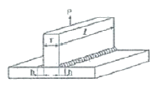
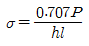
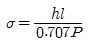
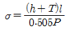
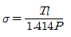
(정답률: 81%)
71. 구조용강의 용접균열을 발생장소, 발생방향, 발생온도에 따라 구분할 때 발생온도에 따라 구분에 해당되지 않는 것은?
- 고온균열
- 저온균열
- 재열균열
- 모재균열
(정답률: 79%)
72. 가스 실드 아크 용접 시 실드가스가 부족할 때 가장 많이 발생하는 용접 결함은?
- 기공
- 오버랩
- 언더컷
- 슬래그 흔입
(정답률: 82%)
73. 용착 금속의 기계적 성질에 대한 설명으로 틀린 것은?
- 연강을 고온에서 사용하는 경우 크리프 강도가 저하된다.
- 용접부의 표면 덧붙이는 용접이음 강도를 증가시킨다.
- 노치가 있는 경우 응력집중을 일으켜 용접이음 강도를 저하시킨다.
- 연강의 경우 온도가 낮을수록 항복점과 인장 강도는 증가한다.
(정답률: 50%)
74. 한국산업표준에서 용접의 기본기호 중 [보기]가 의미하는 것은?
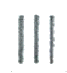
- 심 용접
- 가장자리 용접
- 표면육성
- U형 맞대기 용접
(정답률: 64%)
75. 주철제품의 보수용접 방법으로 틀린 것은?
- 용접하기 전에 예열처리를 한다.
- 움직이지 않도록 강력하게 구속한 후 용접한다.
- 용접 길이가 길 경우 일회 용접선의 길이를 제한한다.
- 균열의 보수는 균열의 성장을 방지하기 위하여 균열의 끝에 정지구멍을 뚫는다.
(정답률: 72%)
76. 비드 밑 균열의 발생과 관계없는 것은?
- 수소가 원인이 된다.
- 고탄소강 용접 시 발생한다.
- 연강 용접 시 자주 발생한다.
- 고장력강 용접 시 발생한다.
(정답률: 64%)
77. 용접부의 크기를 결정하는 기본 설계방법으로 틀린 것은?
- 적합한 용접부 크기로 할 것
- 안전율을 고려하여 안전한 강도를 유지하도록 할 것
- 용접강도가 비용적인 측면에서 단속 필릿 용접의 경우 용접길이보다 목걸이를 길게 할 것
- 용접 이음에 걸리는 하중이 작거나 없을 때에는 연속 필릿 용접보다 단속 필릿 용접으로 할 것
(정답률: 75%)
78. 세로비드 노치 굽힘 시험법으로 용접하지 않은 모재를 시험할 수 있는 장점이 있으며, 용접부의 연성이나 균열을 조사하는 시험은?
- 킨젤 시험
- 슈나트 시험
- 카안 인열 시험
- 샤르피 충격 시험
(정답률: 77%)
79. 구조물 제작 시 용접 이음형상에 따른 종류가 아닌 것은?
- 아래보기 이음
- 모서리 이음
- 겹치기 이음
- T자 이음
(정답률: 80%)
80. 접합하려는 두 부재를 겹쳐놓고 한쪽의 부재에 둥근 구멍을 뚫고 그 곳을 용접하는 것은?
- 필릿 용접
- 플레어 용접
- 플러그 용접
- 그루브 용접
(정답률: 80%)
5과목: 용접일반 및 안전관리
81. 용접조건이 같을 때 맞대기 이음의 첫층(1pass)에서 수축량에 미치는 영향이 가장 큰 강은?
- 연강
- HT 60강
- HT 80강
- 9% NIU
(정답률: 45%)
82. 연납땜에 주로 사용하는 용가재인 주석의 특징을 설명한 것 중 틀린 것은?
- 응고점이 낮다.
- 퍼짐성이 좋다.
- 주석이 증가하면 가격은 싸진다.
- 주석이 증가하면 내식성이 증가한다.
(정답률: 61%)
83. MIG용접 시 용융금속의 이행 행태가 아닌 것은?
- 스프레이(spray) 이행형
- 스킵(slip) 이행형
- 입상(globular) 이행형
- 단락(short circuit) 이행형
(정답률: 63%)
84. 이산화탄소 아크용접 시 건강에 가장 나쁜 영향을 미치는 것은?
- 이산화탄소의 축적에 의한 질식
- 질소의 축적에 의한 중독 작용
- 복사에너지에 의한 질식
- 탄소의 축적에 의한 질식
(정답률: 83%)
85. 용접에 의한 블로 홀(blow hole)발생 방지대책이 아닌 것은?
- 예열 실시
- 용접부의 녹 제거
- 용접재료 건조
- 모재로 림드강을 사용
(정답률: 75%)
86. 방사선 투과사진의 상의 질을 나타내는 척도는?
- 투과도계
- 납글자
- 탐촉자
- 흡수도계
(정답률: 79%)
87. 플라스마 아크 용접에 적당항 재료가 아닌 것은?
- 탄소강
- 니켈합금
- 알루미늄합금
- 스테인리스강
(정답률: 38%)
88. 외부에서 신선한 공기를 송급시키는 호흡용 보호구는?
- 보호 마스크
- 방진 마스크
- 방독 마스크
- 호스 마스크
(정답률: 61%)
89. 내용적 50L의 산소용기에 설치한 조정기의 고압게이지가 8MPa에서 산소를 사용한 후 1MPa로 떨어졌다면 산소의 소비량은?
- 3000L
- 3500L
- 3750L
- 4200L
(정답률: 48%)
90. 용접부의 예열 목적에 대하여 설명한 것 중 틀린 것은?
- 용접부의 기계적 성질을 향상시킨다.
- 탄소의 방출을 용이하게 하여 저온 균열을 방지한다.
- 용접부의 열영향부와 용착 금속의 경화를 방지한다.
- 온도 분포를 완만하게 하여 변형과 잔류 응력 발생을 적게 한다.
(정답률: 35%)
91. 마찰용접의 특징에 대한 설명으로 틀린 것은?
- 작업능률이 높고 변형의 발생이 적다.
- 국부 가열이므로 열영향부가 좁고 이음 성능이 좋다.
- 취급과 조작이 간단하고 이종 금속의 접합이 가능하다.
- 용접물의 형상치수, 단면모양, 길이, 무게 등의 제한을 받지 않는다.
(정답률: 66%)
92. 투과법, 펄스 반사법, 공진법 등으로 시험하는 비파괴검사는?
- 초음파탐상검사
- 자기탐상검사
- 와전류탐상검사
- 방사선투과검사
(정답률: 72%)
93. 콘크리트 절단을 할 수 있는 것은?
- 스카핑
- 가스 가우징
- 산소창 절단
- 탄소 아크 절단
(정답률: 60%)
94. 간이 자동화 용접법인 중력식 용접법(gravity welding)에 주로 사용되는 피복 아크 용접봉의 종류로 가장 적당한 것은?
- 저수소계 용접봉
- 일루미나이트계 용접봉
- 철분산화철계 용접봉
- 고셀룰로오스계 용접봉
(정답률: 45%)
95. 안전표지 색채에서 지시표지에 사용되는 색은?
- 노란색
- 파란색
- 검정색
- 빨간색
(정답률: 70%)
96. 피복 아크 용접에서 V형 용접 홈을 선택할 경우 판두께로 적합한 것은?
- 5mm 이하
- 6~20mm
- 20mm 이상
- 어느 것이나 이용
(정답률: 84%)
97. 허용 사용률이 몇 % 이상이면 용접기를 연속적으로 사용해도 지장이 없는가?
- 40%
- 60%
- 100%
- 200%
(정답률: 57%)
98. 진공상태에서 용접하는 것은?
- 전자 빔 용접
- 논 가스 아크 용접
- 일렉트로 슬래그 용접
- 불활성가스 텅스텐 용접
(정답률: 85%)
99. 아세틸렌 용기의 밸브는 일반적으로 전용핸들을 이용하여 몇 회전 정도 열어서 사용하면 좋은가?
- 0.5 회전
- 1.5 회전
- 2 회전 이상
- 완전히 연다.
(정답률: 57%)
100. 탄산가스 용접에 관련항 설명으로 틀린 것은?
- 전압을 높이면 비드가 넓어진다.
- 솔리드 와이어 용착율은 90~95%에 달한다.
- 전류를 높이면 아크전압도 함께 높여 주어야 좋다.
- 와이어 돌출길이는 200A 이하에서는 15~25mm 정도로 한다.
(정답률: 45%)